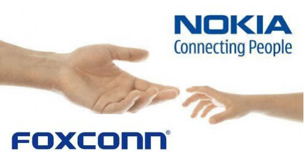
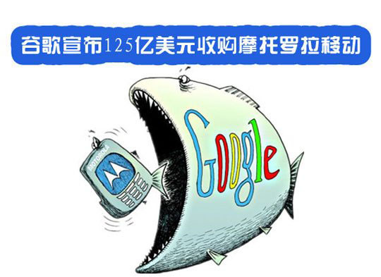
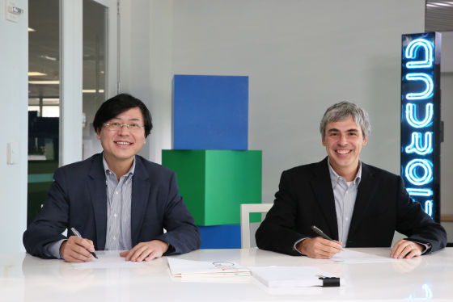
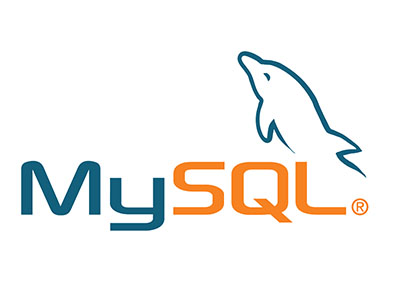
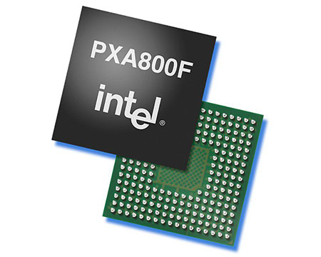

18日，微软宣布，将把旗下全部功能手机业务卖给富士康科技集团下属公司——富士康移动公司(FIH Mobile)，以及芬兰公司HMD Global(HMD)，售价3.5亿美元。
至此，曾经的功能机霸主诺基亚已经被卖了两手。
2013年9月2微软以37.9亿欧元（约合50亿美元）的价格收购诺基亚旗下的大部分手机业务，另外再用16.5亿欧元（约合21.8亿美元）的价格购买诺基亚的专利许可证，总价格大约为54.4亿欧元（约合71亿美元）。
虽然微软此次出售的只是诺基亚的功能机业务，但几年时间，从21多亿美元收购到3.5亿美元出售，微软显然没有从这次收购中获得希望得到的成功。
科技行业日新月异，昔日巨头，很可能转眼间就成了烫手山芋，被不断转手，下面我们来看看其他被多次转手的企业。
1、摩托罗拉
和诺基亚一样，摩托罗拉是手机发发明者，但是摩托罗拉并没有因为移动市场大放异彩，功能机时代不及诺基亚，智能机时代更是被甩到已经看不到对手的角落。
2011年，8月15日谷歌和摩托罗拉移动公司宣布，谷歌将以每股40.00美元现金收购摩托罗拉移动，总额约125亿美。
这是一场看上去很好的收购，谷歌是移动操作系统的霸主，摩托罗拉有强大的手机硬件制造业务和销售网络。然而这次结合的结果并不是很好。
2014年1月30日，联想集团证实将以29亿美元从谷歌收购摩托罗拉移动。摩托罗拉移动的3500名员工，2000项专利，品牌和商标，和全球50多家运营商的合作关系都归入联想移动业务集团。
2、MySQL
MySQL是一个灵活轻量级的数据库系统，最开始时并不被传统数据库长沙所重视。但是由于其轻便灵活易用的特性，伴随着互联网的发展，MySQL日益壮大，成为互联网上最流行的数据库。
2008年1月16日,Sun宣布已经与MySQL AB达成协议，以大约10亿美元收购MySQL AB，其中8亿美元现金收购MySQL AB的全部股权，另外的2亿美元作为期权。
MySQL并没有给已经落后的SUN带来真正的利润，虽然MySQL依然蓬勃的发展，但无法拯救SUN日薄西山的业务。
仅仅一年后，2009年4月20日，甲骨文宣布，该公司将以每股9.5美元的价格收购Sun。该交易价值约为74亿美元，随着这个交易，MySQL也并入了甲骨文。
MySQL以及Sun的Java都是开源领域功臣，为整个互联网应用发展做出了杰出的贡献。但甲骨文却不是开源的拥护者，这次交易以后，很多开源人士都对MySQL以及Java的发展表示了担忧。
3、XScale
英特尔体系看似和ARM是你死我活的，但实际情况不是这样，他们之间有很久远的纠葛。
DEC公司1995年开始研发基于ARM指令集的StrongARM内核，并且得到了业界的广泛认可。StrongARM的成功也使得ARM开始被业界关注。不过由于DEC技术与商业的严重背离，在与Intel的竞争中很快败下阵来，直到1998年，DEC逐渐变卖了自己的全部资产，而Intel从DEC手中获得了StrongARM与ARM架构的完整授权，StrongARM是XScale的前身。
被Intel收购后，StrongARM拥有了一个新名字——XScale，加上Intel强大的生态系统，XScale强势进军嵌入式领域。 从1998年到2006年期间，XScale处理器席卷了整个嵌入式领域。虽然XScale架构取得了巨大的成功，但是并没有使Intel盈利。
2006年，财报表现不佳的Intel开始了有史以来最大规模的裁员。并且做出了一个重大决定，将并不盈利的XScale处理器出售给马维尔（Marvell）。可悲的是，当时的马维尔并不需要XScale处理器，看重的仅仅是ARM指令集的完整授权。之后马维尔很快推出了自家的基于ARM指令集的处理器，XScale架构的命运终于走到了尽头。
总结：相对于其他行业，科技公司的收购兼并更加频繁，也更加有趣。当然收购并不都是失败的，谷歌收购安卓，成就移动霸业，腾讯收购Foxmail，成就了微信。收购是企业战略的一部分，运用得当，得市场、得人才，运用不当像上面这样大笔钱打水漂也是常有的事。